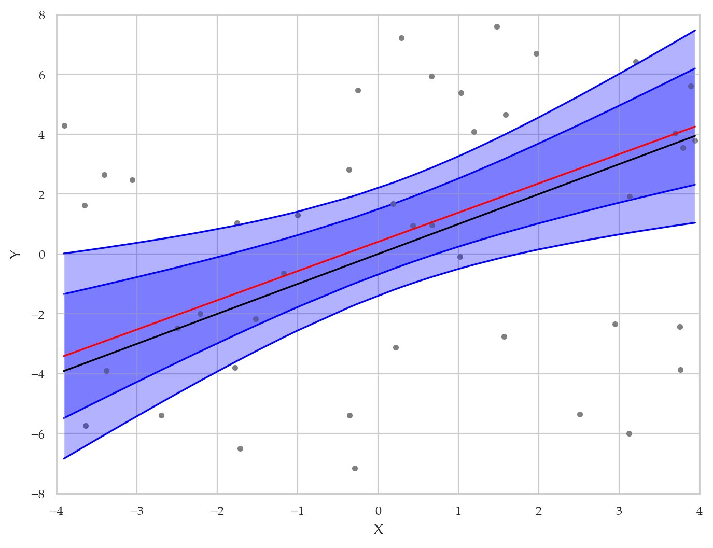
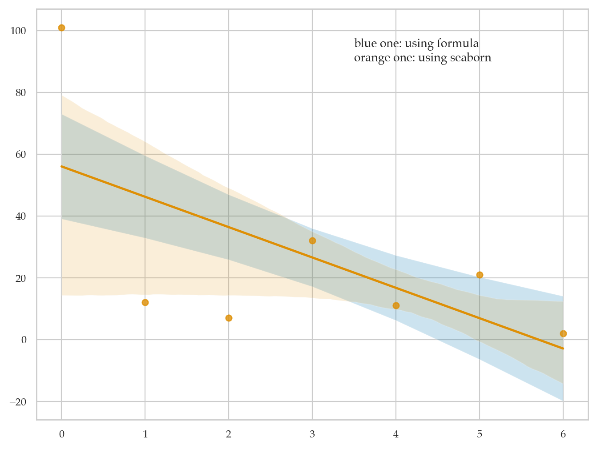
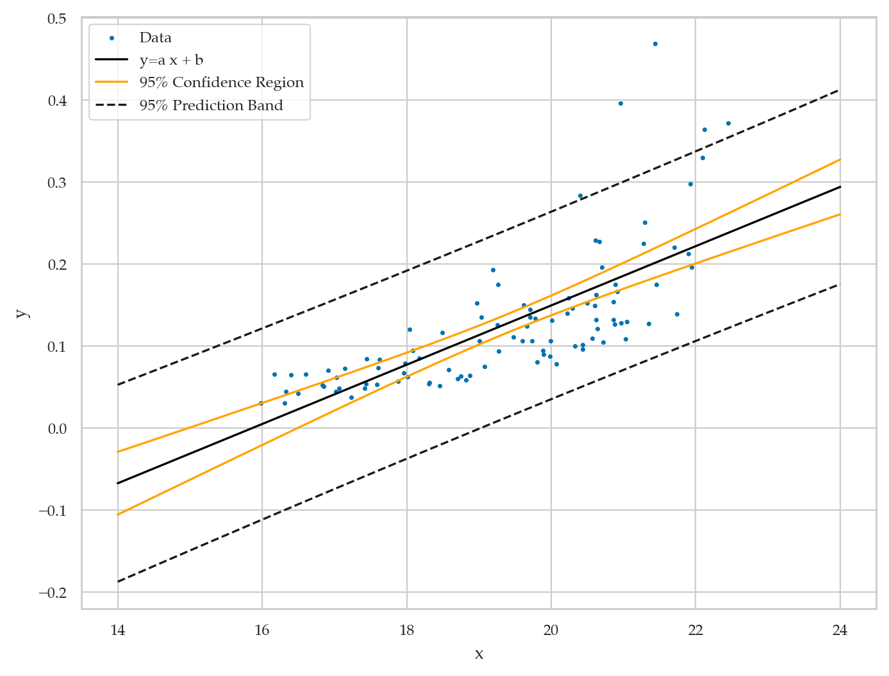
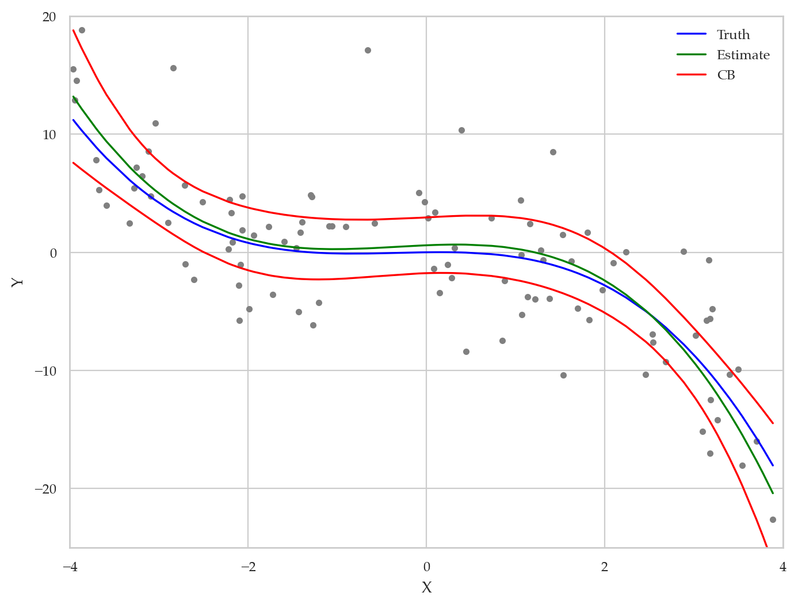
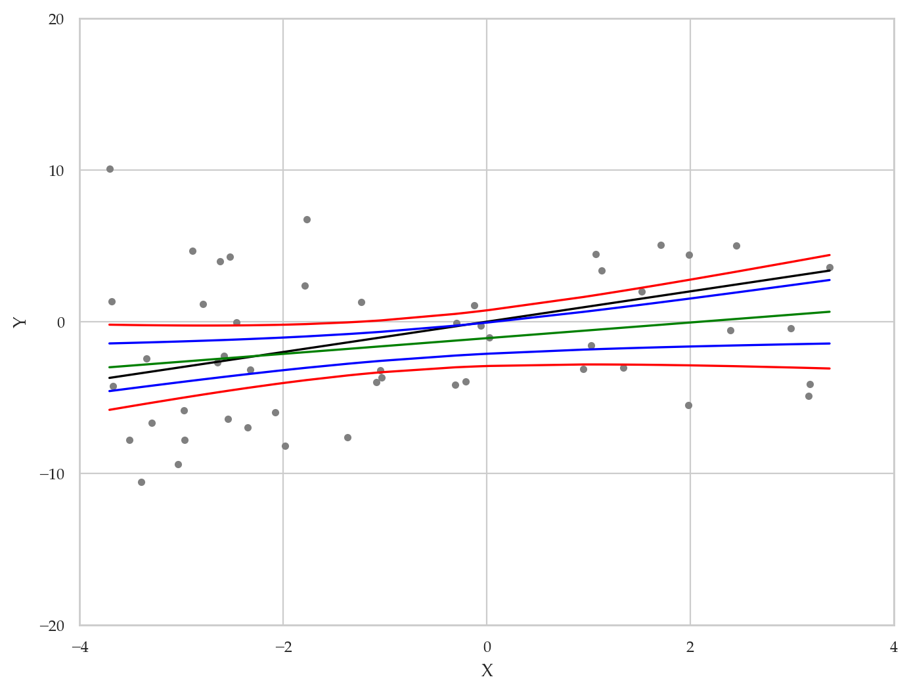

Section 4.4 — Interpreting linear models#
This notebook contains the code examples from Section 4.4 Interpreting linear models from the No Bullshit Guide to Statistics.
Notebook setup#
# load Python modules
import os
import numpy as np
import pandas as pd
import seaborn as sns
import matplotlib.pyplot as plt
# Figures setup
plt.clf() # needed otherwise `sns.set_theme` doesn't work
from plot_helpers import RCPARAMS
RCPARAMS.update({'figure.figsize': (8, 6)}) # good for screen
# RCPARAMS.update({'figure.figsize': (5, 1.6)}) # good for print
sns.set_theme(
context="paper",
style="whitegrid",
palette="colorblind",
rc=RCPARAMS,
)
# High-resolution please
%config InlineBackend.figure_format = 'retina'
# Where to store figures
DESTDIR = "figures/lm/interpreting"
<Figure size 640x480 with 0 Axes>
# set random seed for repeatability
np.random.seed(42)
import statsmodels.formula.api as smf
# TODO: move to Sec 4.3
# Model fit diagnostics and plots
# influence = fit1.get_influence()
# influence.summary_frame()
# resid_studentized = influence.resid_studentized_internal
# resid_studentized
# fit1.outlier_test()
# import statsmodels.api as sm
# sm.graphics.influence_plot(fit1, criterion="cooks");
# sm.graphics.plot_ccpr(fit1, "effort");
# sm.graphics.plot_regress_exog(fit1, "effort");
students = pd.read_csv("../datasets/students.csv")
model1 = smf.ols('score ~ 1 + effort', data=students)
fit1 = model1.fit()
# the coefficients of the best-fit line
fit1.params
Intercept 32.465809
effort 4.504850
dtype: float64
fit1.rsquared, fit1.rsquared_adj
(0.7734103402591798, 0.7559803664329628)
# Explained sum of squares
fit1.ess
1078.2917900307098
fit1.ssr / 15
21.060813997952703
fit1.fittedvalues
# ALT.
# fit1.predict(students["effort"])
0 81.838969
1 71.612959
2 71.207522
3 68.144224
4 77.063828
5 81.118193
6 67.648690
7 73.595093
8 55.936080
9 67.198205
10 76.703440
11 84.406734
12 64.450247
13 61.251803
14 86.524013
dtype: float64
Metrics#
from sklearn import metrics
scores = students["score"].values
scoreshat = fit1.fittedvalues.values
ybar = np.mean(scores)
# TSS = Total Sum of Squares
tss = sum( (scores-ybar)**2 )
# fit1.centered_tss, tss
# SSR = Sum of Squares Residuals
# ssr = sum( (scores-scoreshat)**2 )
# ssr, fit1.ssr
# ESS = Explained Sum of Squares
# ess = sum( (scoreshat-ybar)**2 )
# fit1.ess, ess
# R^2
# metrics.r2_score(scores, scoreshat), fit1.rsquared, 1-fit1.ssr/tss, fit1.ess/tss
# MSE
# metrics.mean_squared_error(scores, scoreshat), fit1.ssr/15
# RMSE
# metrics.root_mean_squared_error(scores, scoreshat), np.sqrt(fit1.ssr/15)
# MAPE
# metrics.mean_absolute_percentage_error(scores, scoreshat)
# MAE
# metrics.mean_absolute_error(scores, scoreshat)
# Mean squared error the model
# The explained sum of squares divided by the model degrees of freedom
# fit1.mse_model, fit1.ess/1
# Mean squared error of the residuals
# The sum of squared residuals divided by the residual degrees of freedom.
# fit1.mse_resid, fit1.ssr/(15-2)
# Total mean squared error
# The uncentered total sum of squares divided by the number of observations.
# fit1.mse_total, tss/(15-1)
Confidence intervals#
# estimated parameters
fit1.params
Intercept 32.465809
effort 4.504850
dtype: float64
# standard errors
fit1.bse
Intercept 6.155051
effort 0.676276
dtype: float64
Hypothesis testing#
fit1.tvalues
Intercept 5.274661
effort 6.661264
dtype: float64
fit1.df_resid
13.0
fit1.pvalues
Intercept 0.000150
effort 0.000016
dtype: float64
# to reproduce `effort` p-value
# from scipy.stats import t as tdist
# 2*(1-tdist(df=fit1.df_resid).cdf(fit1.tvalues["effort"]))
Prediction#
new_data = {"effort": 7}
fit1.predict(new_data)
0 63.999762
dtype: float64
pred_score = fit1.get_prediction(new_data)
# observation + 90% CI
pred_score.predicted, pred_score.se_obs, pred_score.conf_int(obs=True, alpha=0.1)
(array([63.99976171]),
array([5.25168079]),
array([[54.69938482, 73.30013861]]))
# # ALT.
# from scipy.stats import t as tdist
# obs_dist = tdist(df=pred_score.df, loc=pred_score.predicted, scale=pred_score.se_obs)
# obs_dist.ppf(0.05), obs_dist.ppf(0.95)
pred_score.predicted_mean, pred_score.se_mean, pred_score.conf_int(obs=False, alpha=0.1)
(array([63.99976171]),
array([1.81085943]),
array([[60.79285027, 67.20667315]]))
# # ALT.
# from scipy.stats import t as tdist
# mean_dist = tdist(df=pred_score.df, loc=pred_score.predicted, scale=pred_score.se_mean)
# mean_dist.ppf(0.05), mean_dist.ppf(0.95)
pred_score.predicted, pred_score.conf_int(alpha=0.1, obs=True)
(array([63.99976171]), array([[54.69938482, 73.30013861]]))
tdist(df=pred_score.df, loc=pred_score.predicted, scale=pred_score.se_mean).interval(0.1)
---------------------------------------------------------------------------
NameError Traceback (most recent call last)
Cell In[25], line 1
----> 1 tdist(df=pred_score.df, loc=pred_score.predicted, scale=pred_score.se_mean).interval(0.1)
NameError: name 'tdist' is not defined
Sheffé bands (several different ways)#
# via https://stackoverflow.com/a/26672416/127114
import numpy as np
import matplotlib.pyplot as plt
import scipy.special as sp
## Sample size.
n = 50
## Predictor values.
XV = np.random.uniform(low=-4, high=4, size=n)
XV.sort()
## Design matrix.
X = np.ones((n,2))
X[:,1] = XV
## True coefficients.
beta = np.array([0, 1.], dtype=np.float64)
## True response values.
EY = np.dot(X, beta)
## Observed response values.
Y = EY + np.random.normal(size=n)*np.sqrt(20)
## Get the coefficient estimates.
u,s,vt = np.linalg.svd(X,0)
v = np.transpose(vt)
bhat = np.dot(v, np.dot(np.transpose(u), Y)/s)
## The fitted values.
Yhat = np.dot(X, bhat)
## The MSE and RMSE.
MSE = ((Y-EY)**2).sum()/(n-X.shape[1])
s = np.sqrt(MSE)
## These multipliers are used in constructing the intervals.
XtX = np.dot(np.transpose(X), X)
V = [np.dot(X[i,:], np.linalg.solve(XtX, X[i,:])) for i in range(n)]
V = np.array(V)
## The F quantile used in constructing the Scheffe interval.
QF = sp.fdtri(X.shape[1], n-X.shape[1], 0.95)
QF_2 = sp.fdtri(X.shape[1], n-X.shape[1], 0.68)
## The lower and upper bounds of the Scheffe band.
D = s*np.sqrt(X.shape[1]*QF*V)
LB,UB = Yhat-D,Yhat+D
D_2 = s*np.sqrt(X.shape[1]*QF_2*V)
LB_2,UB_2 = Yhat-D_2,Yhat+D_2
## Make the plot.
plt.clf()
plt.plot(XV, Y, 'o', ms=3, color='grey')
# plt.hold(True)
a = plt.plot(XV, EY, '-', color='black', zorder = 4)
plt.fill_between(XV, LB_2, UB_2, where = UB_2 >= LB_2, facecolor='blue', alpha= 0.3, zorder = 0)
b = plt.plot(XV, LB_2, '-', color='blue', zorder=1)
plt.plot(XV, UB_2, '-', color='blue', zorder=1)
plt.fill_between(XV, LB, UB, where = UB >= LB, facecolor='blue', alpha= 0.3, zorder = 2)
b = plt.plot(XV, LB, '-', color='blue', zorder=3)
plt.plot(XV, UB, '-', color='blue', zorder=3)
d = plt.plot(XV, Yhat, '-', color='red',zorder=4)
plt.ylim([-8,8])
plt.xlim([-4,4])
plt.xlabel("X")
plt.ylabel("Y")
Text(0, 0.5, 'Y')

# via https://discuss.python.org/t/whats-the-meaning-of-this-confidence-bands/14445/9
import numpy as np
import matplotlib.pyplot as plt
import seaborn as sns
x = np.arange(7)
y = np.array([101,12,7,32,11,21,2])
n = x.size
# calculate interval manually using the formula
a, b = np.polyfit(x, y, deg=1)
y_est = a * x + b
y_err = (y-y_est).std() * np.sqrt(1/n + (x - x.mean())**2 / np.sum((x - x.mean())**2))
fig, ax = plt.subplots()
# plot manually calculated interval (std interval) --- the blue one
ax.plot(x, y_est, '-')
ax.fill_between(x, y_est - y_err, y_est + y_err, alpha=0.2)
# plot seaborn calculated interval (std interval, i.e. when ci=68.27) --- the orange one
sns.regplot(x=x, y=y, ci=68.27)
plt.text(3.5,90,'blue one: using formula\norange one: using seaborn')
plt.show()

# via https://apmonitor.com/che263/index.php/Main/PythonRegressionStatistics
# see also https://www.youtube.com/watch?v=r4pgGD1kpYM
import numpy as np
from scipy.optimize import curve_fit
import matplotlib.pyplot as plt
from scipy import stats
import pandas as pd
# pip install uncertainties, if needed
try:
import uncertainties.unumpy as unp
import uncertainties as unc
except:
try:
from pip import main as pipmain
except:
from pip._internal import main as pipmain
pipmain(['install','uncertainties'])
import uncertainties.unumpy as unp
import uncertainties as unc
# import data
url = 'http://apmonitor.com/che263/uploads/Main/stats_data.txt'
data = pd.read_csv(url)
x = data['x'].values
y = data['y'].values
n = len(y)
def f(x, a, b):
return a * x + b
popt, pcov = curve_fit(f, x, y)
# retrieve parameter values
a = popt[0]
b = popt[1]
print('Optimal Values')
print('a: ' + str(a))
print('b: ' + str(b))
# compute r^2
r2 = 1.0-(sum((y-f(x,a,b))**2)/((n-1.0)*np.var(y,ddof=1)))
print('R^2: ' + str(r2))
# calculate parameter confidence interval
a,b = unc.correlated_values(popt, pcov)
print('Uncertainty')
print('a: ' + str(a))
print('b: ' + str(b))
# plot data
plt.scatter(x, y, s=3, label='Data')
# calculate regression confidence interval
px = np.linspace(14, 24, 100)
py = a*px+b
nom = unp.nominal_values(py)
std = unp.std_devs(py)
def predband(x, xd, yd, p, func, conf=0.95):
# x = requested points
# xd = x data
# yd = y data
# p = parameters
# func = function name
alpha = 1.0 - conf # significance
N = xd.size # data sample size
var_n = len(p) # number of parameters
# Quantile of Student's t distribution for p=(1-alpha/2)
q = stats.t.ppf(1.0 - alpha / 2.0, N - var_n)
# Stdev of an individual measurement
se = np.sqrt(1. / (N - var_n) * \
np.sum((yd - func(xd, *p)) ** 2))
# Auxiliary definitions
sx = (x - xd.mean()) ** 2
sxd = np.sum((xd - xd.mean()) ** 2)
# Predicted values (best-fit model)
yp = func(x, *p)
# Prediction band
dy = q * se * np.sqrt(1.0+ (1.0/N) + (sx/sxd))
# Upper & lower prediction bands.
lpb, upb = yp - dy, yp + dy
return lpb, upb
lpb, upb = predband(px, x, y, popt, f, conf=0.95)
# plot the regression
plt.plot(px, nom, c='black', label='y=a x + b')
# uncertainty lines (95% confidence)
plt.plot(px, nom - 1.96 * std, c='orange',\
label='95% Confidence Region')
plt.plot(px, nom + 1.96 * std, c='orange')
# prediction band (95% confidence)
plt.plot(px, lpb, 'k--',label='95% Prediction Band')
plt.plot(px, upb, 'k--')
plt.ylabel('y')
plt.xlabel('x')
plt.legend(loc='best')
Optimal Values
a: 0.036141582292222356
b: -0.5735680960487426
R^2: 0.5278048667629538
Uncertainty
a: 0.0361+/-0.0035
b: -0.57+/-0.07
<matplotlib.legend.Legend at 0x12c9ac370>

# via https://en.m.wikipedia.org/wiki/File:Polyreg_scheffe.svg
import numpy as np
import matplotlib.pyplot as plt
import scipy.special as sp
## Sample size.
n = 100
## Predictor values.
XV = np.random.uniform(low=-4, high=4, size=n)
XV.sort()
## Design matrix.
X = np.ones((n,4))
X[:,1] = XV
X[:,2] = XV**2
X[:,3] = XV**3
## True coefficients.
beta = np.array([0, 0.1, -0.25, -0.25], dtype=np.float64)
## True response values.
EY = np.dot(X, beta)
## Observed response values.
Y = EY + np.random.normal(size=n)*np.sqrt(20)
## Get the coefficient estimates.
u,s,vt = np.linalg.svd(X,0)
v = np.transpose(vt)
bhat = np.dot(v, np.dot(np.transpose(u), Y)/s)
## The fitted values.
Yhat = np.dot(X, bhat)
## The MSE and RMSE.
MSE = ((Y-EY)**2).sum()/(n-X.shape[1])
s = np.sqrt(MSE)
## These multipliers are used in constructing the Scheffe interval.
XtX = np.dot(np.transpose(X), X)
V = [np.dot(X[i,:], np.linalg.solve(XtX, X[i,:])) for i in range(n)]
V = np.array(V)
## The F quantile used in constructing the Scheffe interval.
QF = sp.fdtri(X.shape[1], n-X.shape[1], 0.95)
## The lower and upper bounds of the confidence band.
D = s*np.sqrt(X.shape[1]*QF*V)
LB,UB = Yhat-D,Yhat+D
## Make the plot.
plt.clf()
plt.plot(XV, Y, 'o', ms=3, color='grey')
plt.plot(XV, EY, '-', color='blue', label = "Truth")
plt.plot(XV, Yhat, '-', color='green', label = "Estimate")
plt.plot(XV, LB, '-', color='red', label = "CB")
plt.plot(XV, UB, '-', color='red')
plt.legend(frameon=False)
plt.ylim([-25,20])
plt.gca().set_yticks([-20,-10,0,10,20])
plt.xlim([-4,4])
plt.gca().set_xticks([-4,-2,0,2,4])
plt.xlabel("X")
plt.ylabel("Y")
Text(0, 0.5, 'Y')

# via https://en.wikipedia.org/wiki/File:Regression_confidence_band.svg
import numpy as np
import matplotlib.pyplot as plt
import scipy.special as sp
## Sample size.
n = 50
## Predictor values.
XV = np.random.uniform(low=-4, high=4, size=n)
XV.sort()
## Design matrix.
X = np.ones((n,2))
X[:,1] = XV
## True coefficients.
beta = np.array([0, 1.], dtype=np.float64)
## True response values.
EY = np.dot(X, beta)
## Observed response values.
Y = EY + np.random.normal(size=n)*np.sqrt(20)
## Get the coefficient estimates.
u,s,vt = np.linalg.svd(X,0)
v = np.transpose(vt)
bhat = np.dot(v, np.dot(np.transpose(u), Y)/s)
## The fitted values.
Yhat = np.dot(X, bhat)
## The MSE and RMSE.
MSE = ((Y-EY)**2).sum()/(n-X.shape[1])
s = np.sqrt(MSE)
## These multipliers are used in constructing the intervals.
XtX = np.dot(np.transpose(X), X)
V = [np.dot(X[i,:], np.linalg.solve(XtX, X[i,:])) for i in range(n)]
V = np.array(V)
## The F quantile used in constructing the Scheffe interval.
QF = sp.fdtri(X.shape[1], n-X.shape[1], 0.95)
## The lower and upper bounds of the Scheffe band.
D = s*np.sqrt(X.shape[1]*QF*V)
LB,UB = Yhat-D,Yhat+D
## The lower and upper bounds of the pointwise band.
D = s*np.sqrt(2*V)
LBP,UBP = Yhat-D,Yhat+D
## Make the plot.
plt.clf()
plt.plot(XV, Y, 'o', ms=3, color='grey')
# plt.hold(True)
a = plt.plot(XV, EY, '-', color='black')
b = plt.plot(XV, LB, '-', color='red')
plt.plot(XV, UB, '-', color='red')
c = plt.plot(XV, LBP, '-', color='blue')
plt.plot(XV, UBP, '-', color='blue')
d = plt.plot(XV, Yhat, '-', color='green')
# B = plt.legend( (a,d,b,c), ("Truth", "Estimate", "95% simultaneous CB", "95% pointwise CB") )
# B.draw_frame(False)
plt.ylim([-20,15])
plt.gca().set_yticks([-20,-10,0,10,20])
plt.xlim([-4,4])
plt.gca().set_xticks([-4,-2,0,2,4])
plt.xlabel("X")
plt.ylabel("Y");
